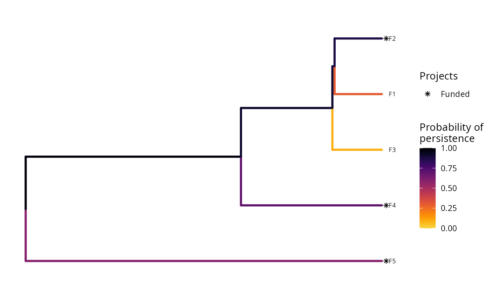
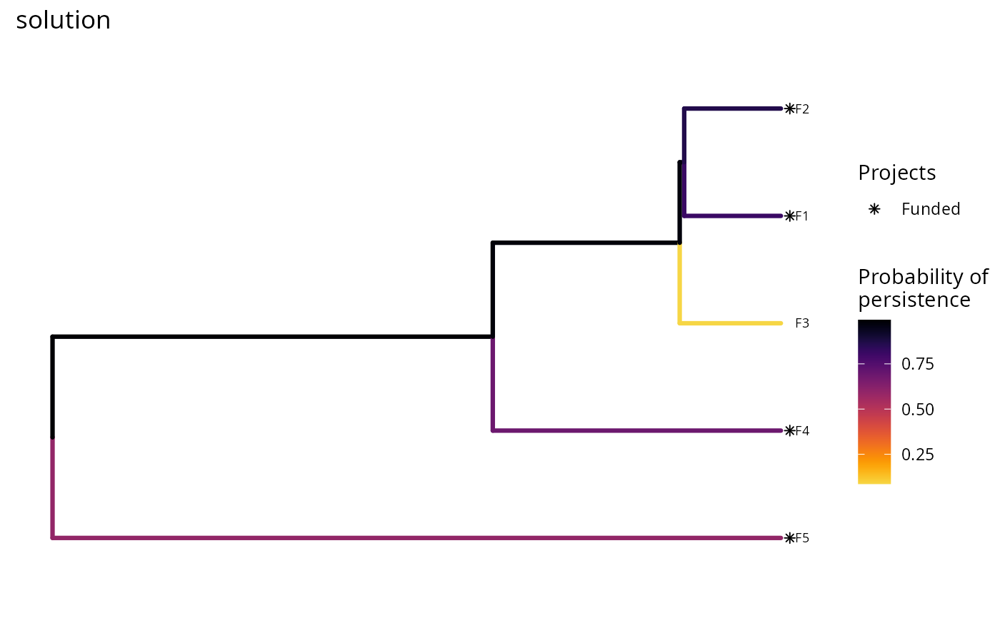

Plot a phylogram to visualize a project prioritization
Source:R/plot_phylo_persistence.R
plot_phylo_persistence.RdCreate a plot showing a phylogenetic tree (i.e. a "phylogram") to visualize the probability that phylogenetic branches are expected to persist into the future under a solution to a project prioritization problem.
plot_phylo_persistence(x, solution, n = 1, symbol_hjust = 0.007, return_data = FALSE)
Arguments
| x | project prioritization |
|---|---|
| solution |
|
| n |
|
| symbol_hjust |
|
| return_data |
|
Value
A ggtree object, or a
treedata object if return_data is
TRUE.
Details
This function requires the ggtree (Yu et al. 2017).
Since this package is distributed exclusively
through Bioconductor, and is not
available on the
Comprehensive R Archive Network,
please execute the following command to install it:
source("https://bioconductor.org/biocLite.R");biocLite("ggtree").
If the installation process fails, please consult the package's online documentation.
In this plot, each phylogenetic branch is colored according to probability that it is expected to persist into the future (see Faith 2008). Features that directly benefit from at least a single completely funded project with a non-zero cost are depicted with an asterisk symbol. Additionally, features that indirectly benefit from funded projects---because they are associated with partially funded projects that have non-zero costs and share actions with at least one completely funded project---are depicted with an open circle symbol.
References
Faith DP (2008) Threatened species and the potential loss of phylogenetic diversity: conservation scenarios based on estimated extinction probabilities and phylogenetic risk analysis. Conservation Biology, 22: 1461--1470.
Yu G, Smith DK, Zhu H, Guan Y, & Lam TTY (2017) ggtree: an R package for visualization and annotation of phylogenetic trees with their covariates and other associated data. Methods in Ecology and Evolution, 8: 28--36.
Examples
# set seed for reproducibility set.seed(500) # load the ggplot2 R package to customize plots library(ggplot2)data(sim_projects, sim_features, sim_actions) # build problem p <- problem(sim_projects, sim_actions, sim_features, "name", "success", "name", "cost", "name") %>% add_max_phylo_div_objective(budget = 400, sim_tree) %>% add_binary_decisions() %>% add_heuristic_solver(number_solutions = 10) # solve problem s <- solve(p) # plot the first solution plot(p, s)# since this function returns a ggplot2 plot object, we can customize the # appearance of the plot using standard ggplot2 commands! # for example, we can add a title plot(p, s) + ggtitle("solution")# we could also also set the minimum and maximum values in the color ramp to # correspond to those in the data, rather than being capped at 0 and 1 plot(p, s) + scale_color_gradientn(name = "Probability of\npersistence", colors = viridisLite::inferno(150, begin = 0, end = 0.9, direction = -1)) + ggtitle("solution")#> #># we could also change the color ramp plot(p, s) + scale_color_gradient(name = "Probability of\npersistence", low = "red", high = "black") + ggtitle("solution")#> #># we could even hide the legend if desired plot(p, s) + scale_color_gradient(name = "Probability of\npersistence", low = "red", high = "black") + theme(legend.position = "hide") + ggtitle("solution")#> #># we can also obtain the raw plotting data using return_data=TRUE plot_data <- plot(p, s, return_data = TRUE) print(plot_data)#> 'treedata' S4 object'. #> #> ...@ phylo: #> Phylogenetic tree with 5 tips and 4 internal nodes. #> #> Tip labels: #> [1] " F1" " F2" " F3" " F4" " F5" #> Node labels: #> [1] " NA" " NA" " NA" " NA" #> #> Rooted; includes branch lengths. #> #> with the following features available: #> 'status', 'prob'.